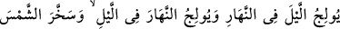
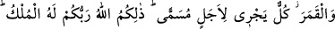
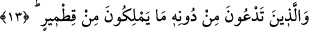

Ne zamana dek kadın gibi renk ve koku bekleyip duracaksın?
Yola koyul, erler gibi adımını at.
Sedefin rengine âşık olan o câhil, sedefi görse de
Asla içindeki şahdâne inciye erişemez.
Bazı mârifet ehli “İki deniz birbirine eşit olmaz” âyetini işârî olarak şu şekilde
yorumlamıştır: İki vakit de birbirine eşit olmaz. Zira biri “bast” hâlidir; sahibi
ravhtadır/ruhtadır. Diğeri de “kabz” halidir; sahibi nevmdedir /Nuh’tadır. Biri “fark”
halidir ki sahibi ubûdiyetle vasıflanmıştır. Diğeri de cem’ halidir ki sahibi rubûbiyeti
şühûd makamındadır.
Kul, kabz hâlinde iken uykusu boğulmuşların uykusu gibidir. Yemesi hastaların
yemesi, yaşayışı zindandaki mahkûmların yaşayışı gibidir. Dilediğince horlukla yaşar,
eziyet içinde yol yürür, tevazu ile konuşur.
İki gözüm iki çeşme, ciğerim yangın.
İki elim de bomboş, başım toz toprak.
Sızlanması, rezilliği ileri safhaya ulaşıp tevâzu ve acziyeti meydana çıkınca, Yüce
Allah onun gönlünün ihtiyacını verir; gönlüne bast ve inbisat kapısını açar. Vakti hoş
geçer, gönlü Mevlâ’ya bağlanır. Sırrı Hak bilgisiyle bezenir ve şöyle şükreder: “Ey
Rabbim! Benim mihnetim idin, devletim/saâdetim oldun. Sıkıntım idin, rahatım oldun.
Işâretim idin, çerağım oldun. Yaram idin, merhemim oldun.”
Allah Teâlâ’dan berzah ve kayıtlardan (bağlardan) kurtulmayı ve en yüce gaye olan
vicdan (vecd) ve şühûda ulaşmayı diliyoruz. Zira o çok acıyan ve çok sevendir.
13. Allah, geceyi gündüzün içine sokar, gündüzü de gecenin içine sokar; güneş ve
ayı emri altına almıştır. Her biri belirtilmiş bir süreye kadar akıp gider. İşte (bütün
bunları yapan) Rabbiniz Allah’tır. Mülk O’nundur. O’nu bırakıp da kendilerine
taptıklarınız ise, bir çekirdek kabuğuna bile sahip değillerdir.
“Allah,” bahar ve yaz mevsiminde gecenin bir bölümünü gündüze katarak “geceyi
gündüzün içine sokar,” gece kısalır, gündüz uzar. Son bahar ve kış mevsiminde
gündüzün bir bölümünü geceye katarak “gündüzü de gecenin içine sokar;” gündüz
kısalır, gece uzar, “güneş ve ayı emri altına almıştır.”
Güneşi ve ayı râm etti, yâni fermanına itâatkâr kıldı.